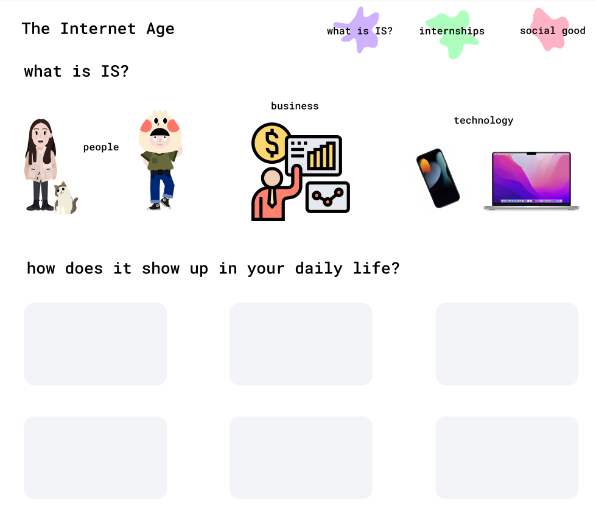
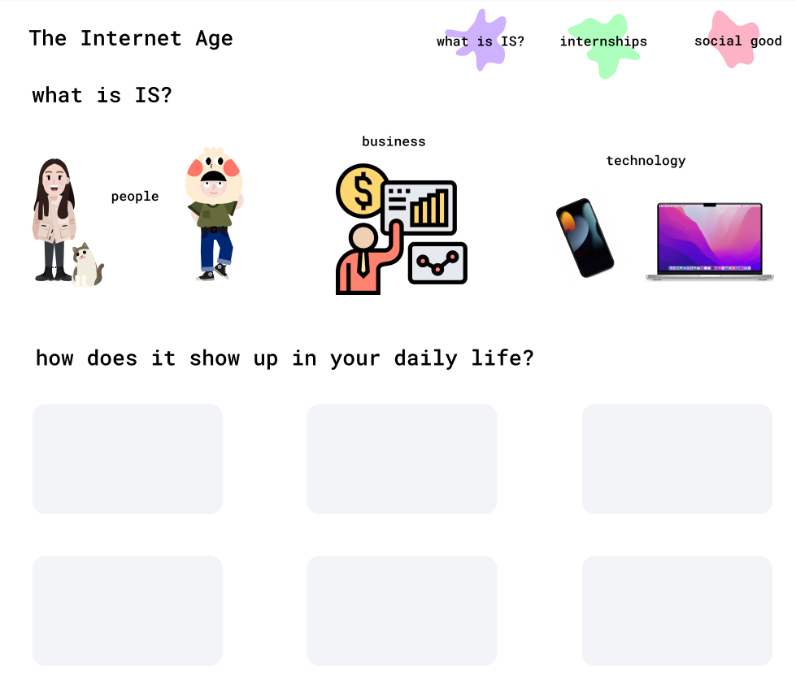

What is Information Systems? What does it do for our society? Where does it appear in our daily lives? Why should I care about the industry? As part of a project for 67-265, Design Fundamentals: Shaping Interactions and Experiences, we were tasked with creating an immersive online experience that answered the question, “What is IS?” and could transform inexperience and bias into insight for stakeholders. The project involved the synthesis of pre-task experience, color theory, typography, and visual/verbal complementary meaning, in order to address an issue linked to lack of knowledge or bias.
Our stakeholders are non-IS majors at Carnegie Mellon University. Their common goals are to pursue a major combination that genuinely interests them or to transfer to one that does. Upon interviewing them, we found that a common thread was that they cared about studying something interdisciplinary–they (understandably) wanted to work at the intersection of their interests. Our users reach their goals of pursuing a major that interests them by exploring different opportunities around campus and in the community. However, it’s difficult to explore your passions and interests when there’s only so much time in the day beyond classes and schoolwork. Whether it’s assignments, extracurriculars, or the fact of just getting acclimated to the college environment, it can be difficult to discover interests amidst the chaos. Upon analyzing the user survey results, we found that many students “don’t know what IS is.” Since they didn’t have a clear grasp on what IS was, they couldn’t really say the last time they recalled when IS helped them.
Information Systems is more prevalent than one might think or notice–it’s everywhere from smart thermometers to our laptops, to ordering food through DoorDash, to ordering concert tickets for Taylor Swift, and more. Data is everywhere–we live in the age of information, and IS is imperative in making that information accessible, secure, and malleable.
The Data Age is a website seeking to bridge the gap between Information Systems and society. If users don’t see a personal connection to a product or service, it’s hard to engage and fully receive the information. In order to bridge this gap, I’ve made one of the three parts of my website explain what IS is and how it manifests in everyday life. Thus, users can get a better understanding of why IS actually matters and how it applies to them.
The second component of my website addresses the user group (non-IS majors): it provides internship, research, and co-op opportunities that integrate IS with different industries. College students are always on the internship and career search grind. Any internship resource will attract the attention of students. People can filter by their own major or field of study (e.g. design, business, engineering, etc.) and find career-related opportunities that mix their interests with IS. A design student who previously may have wanted to work in product design or fashion design can now discover UI/UX and graphic design internships at companies. The third component addresses how IS can be used for social good. People can learn about how to get involved in IS-related opportunities, whether it be hackathons, community service, or more.
Instead of having to dig through university websites, Google articles, and a rabbit hole to find the information they need and want, all the useful career-related information, educational information, informative hackathons, and volunteer opportunities are presented in a unified fashion. Non-IS students no longer have to sift through layers of information and websites to figure out future career opportunities, and by navigating to the site and finding internships they like, they’ll be more likely to click on the other tabs and learn about what IS actually is, and how it manifests in the news and their daily lives. In The Data Age, it's imperative information is presented in an easily digestible and visually attractive format. Information Systems is everywhere, we just need to help people see that.


 
